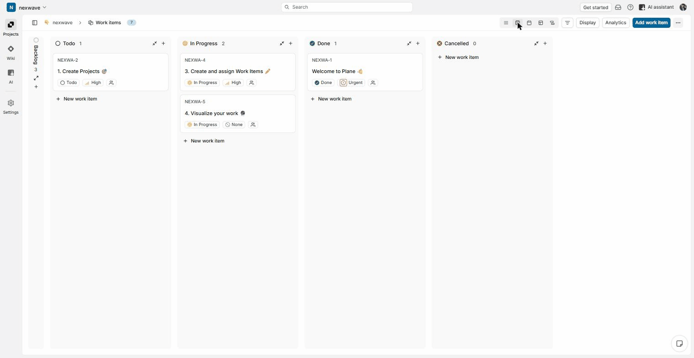
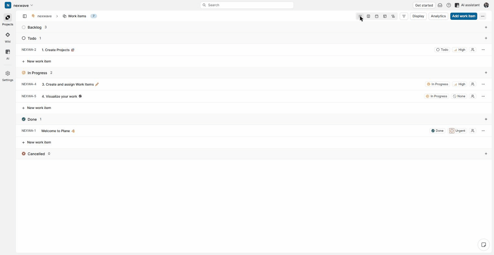

Inbox Helper
The issue today: every incoming lab result, radiology report, discharge summary, specialist letter and portal message lands in one queue with no urgency signal, so GPs work through it in arrival order rather than by what actually matters.
What we're building: a tool that reads each item and flags how urgent it is, so the GP works the queue by what matters, not by what arrived first.
Care Gap Finder
The issue today: patients overdue for a diabetes, cardiovascular-risk or other key check are usually only found when someone happens to run a report.
What we're building: a tool that continuously scans the enrolled patient list and surfaces overdue patients as they fall due, not only when someone checks.
Building software that reads clinical data isn't new by itself. What makes this R&D is the uncertainty still to resolve before either tool can be trusted in a real practice: can the accuracy and safety actually be proven, on real and synthetic New Zealand data, rather than assumed?
What we're researching: the technical architecture that can handle messy real inbox data safely; whether cardiovascular and diabetes risk calculations hold up in edge cases; whether the tools introduce bias across different patient groups; and how the system actually performs once measured across real practices, not just in the lab. None of that is answerable in advance — it has to be tested and proven, which is what the programme's R&D objectives (below) are structured to do.
The grant, in one line: MBIE is co-funding this proving-out work in return for the programme being run and reported properly: tracked budgets, risk registers, quarterly claims. Building that discipline is Capability Development.
Every piece of work in the programme sits in one of these three. Knowing which one you're looking at tells you who owns it and what "done" means.
The actual research. Choosing the technical approach, running experiments, proving the tools are accurate and safe enough for a real GP to rely on.
Building the organisational skills to run R&D properly, alongside the science itself: regulatory and legal know-how, tracking research information, and project management. Three funded streams.
The admin machine that keeps the grant alive: quarterly claims back from MBIE, payroll, contracts, and the MBIE relationship itself.
The programme is seven funded objectives: four research, three capability. Open any one for what it actually means and where it stands right now.
Mar – Jun 2026
Pick the technical architecture and define the NZ data needed. Synthetic-data prototypes need to hit the accuracy targets, and the Medtech and Indici test environments need to be connected.
Where it stands: architecture drafted, currently waiting on a labelled dataset and GP clinical review before the final choice is confirmed.
Apr – Dec 2026
Make the chosen architecture handle messy real inbox data safely, with confidence calibration and zero unsafe automatic actions.
Where it stands: early window, builds directly on Objective 1's architecture choice.
Jul 2026 – Apr 2027
Get CVD and diabetes risk calculations right in edge cases, and check the tool doesn't introduce new bias across different patient groups.
Where it stands: not yet begun, sequenced after Objectives 1 and 2.
Apr 2027 – Jan 2028
Measure the system across 10 to 20 real practices against clinical, safety and operational targets, then write the final R&D report.
Where it stands: not yet begun, the last objective in the sequence.
Expert privacy, clinical-safety and governance advice from external specialists, so the tools meet NZ's medical-device and privacy rules before anyone relies on them.
Setting up how the research itself gets tracked: experiment logs, model versioning, dataset lineage. Makes the science auditable instead of just remembered.
Programme management coaching: budget tracking, risk registers, roadmaps. Delivered by Mark Loeffen of Delytics, in problem-based sessions tied to real programme work, not a fixed course.
First session: Wed 15 Jul, 2pm, via Teams.
This section is discussion material for Mark and Ryo to look at together and agree whether it's worth using, not something that's already been decided.
Plane is project management software, the same category as Monday.com, Asana or Trello. It gives Ting (and anyone else on the programme) a shared place to see what's due, what's in progress, and what's done, instead of that living only in emails or in Ryo's head.


Where things stand: the workspace is live at app.plane.so/nexwave and Claude is already connected to it, able to read and update tasks directly. What's pictured above is Plane's own built-in demo content, not real CD or Ops tasks: nothing has been migrated in and no decision has been made to actually run the programme through it.